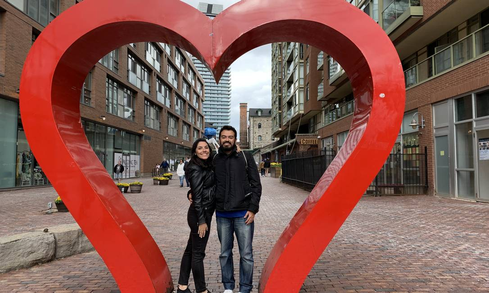

Ultimas Noticias sobre covid-19
89,5% dos adolescentes da cidade de SP tomaram 1ª dose da vacina contra Covid, diz prefeitura

19 de Setembro de 2021
Ministério da Saúde recomendou a suspensão da aplicação da vacina em adolescentes sem comorbidades, mas a Anvisa manteve a posição da recomendar a vacina à categoria, orientação seguida pelo estado de SP. A capital atingiu a marca de 89,5% de adolescentes vacinados contra a Covid-19 neste sábado (18). Já receberam uma dose do imunizante da Pfizer 755.381 jovens, segundo dados da Secretaria Municipal da Saúde.O estado de São Paulo não seguiu a orientação do Ministério da Saúde de suspender a vacinação dos adolescentes sem comorbidades. A Agência Nacional de Vigilância Sanitária (Anvisa) manteve a posição da recomendar a vacina à categoria, visto que não há nenhuma relação, até o momento, entre a morte de uma adolescente de 16 anos e o imunizante.
fonte: Globo.com"
Voltar
Coronavírus: casais inventam novas formas de estar juntos no Dia dos Namorados
Separados pela pandemia, apaixonados mandam entregar mimos na casa dos parceiros e fazem programas on-line juntos.
Falar de amor após a chegada da Covid-19 é também falar de saudade. Há mais de dois meses, muitos casais apaixonados não se encontram. Olho no olho? Só se for por videochamada. A boa notícia é que muitos pombinhos garantem que a distância só fortaleceu o sentimento que já os unia. Um alívio e tanto para os corações que andam ainda mais apertados com a proximidade do Dia dos Namorados.
06de outubro de 2020
Foi com foco na razão que Danielle Andrade e David Hospinal, moradores do Grajaú, decidiram passar a quarentena ao estilo “cada um na sua casa”. Não está sendo fácil, mas a experiência fez com que a relação de quatro anos ganhasse generosas doses de romantismo:
— Eu sempre fui romântica, e David está entrando neste clima depois da quarentena. Tentamos manter a chama acesa namorando por vídeo, assistindo aos mesmos filmes e lives. Nós também fazemos surpresas um para o outro. Recentemente, enviei um salgadinho para ele lanchar a mesma coisa que eu. Já o David, num dia em que eu tive uma crise de ansiedade, mandou um açaí, que amo, só para que eu me acalmasse, ficasse feliz. Estamos sem nos ver desde o dia 15 de março e ainda estamos avaliando se será seguro um reencontro no Dia dos Namorados. Mas o importante é que temos certeza de que o nosso amor é para a vida inteira — frisa Danielle Andrade.
Veja mais em: O GloboVoltar
Médicos que atuam no combate ao coronavírus ganham casamento em hospital; veja
Dermatologista de 31 anos e cirurgião-geral de 32 planejavam se casar no dia 15 de maio, mas tiveram que cancelar a celebração da união devido a pandemia

Um casal de médicos que atua na linha de frente do combate ao novo coronavírus ganhou um casamento surpresa no hospital onde trabalham, em Niterói, no Rio de Janeiro.
A ideia foi de Ricardo Carvalho, que surpreendeu os colegas Katherine Carvalho, que já foi diagnosticada com Covid-19, e o seu então namorado, Frederico Salgado. A dermatologista de 31 anos e o cirurgião-geral de 32 planejavam se casar no dia 15 de maio, mas tiveram que cancelar a celebração da união devido a pandemia.
Voltar
Covid-19: Brasil recebe maior remessa de vacinas entregues pela Pfizer em 4 voos com 5,1 milhões de doses
/i.s3.glbimg.com/v1/AUTH_59edd422c0c84a879bd37670ae4f538a/internal_photos/bs/2021/O/B/eVxQ9PS6mf0JZMG85ExA/pfizer-domingo.jpg)
Covid-19: Brasil recebe maior remessa de vacinas entregues pela Pfizer em 4 voos com 5,1 milhões de doses
Aeronaves vão desembarcar no Aeroporto Internacional de Viracopos, em Campinas. Envios fazem parte do novo cronograma da empresa, que prevê 8,9 milhões de imunizantes até este domingo. O Brasil recebe, neste domingo (12), a maior remessa de vacinas contra a Covid-19 entregue pela Pfizer desde o início do acordo com o governo federal. A farmacêutica americana envia, em quatro voos diferentes, 5,1 milhões de doses. As aeronaves vão desembarcar no Aeroporto Internacional de Viracopos, em Campinas (SP).
Veja mais em: Fonte: saopaulo.sp.gov.brVoltar
Ministério da Saúde vê risco de alta de hospitalizações por Covid em setembro | Gonzalo Vecina Neto
O ministério da Saúde apontou que o país pode enfrentar um quadro de crescimento nas hospitalizações por covid-19 no mês de setembro. Gonzalo Vecina Neto, médico sanitarista e ex-presidente da Anvisa, comentou hoje, durante participação no UOL News, que "finalmente" as autoridades perceberam a chegada da variante delta. "Caminho está longe de terminar (...) Previsão é de ter uma explosão de casos no final de setembro e início de outubro", alertou o especialista.
Veja mais em: Canal Uol - Youtube.comVoltar
SP segue com menor média casos de COVID-19 do ano
O Estado de São Paulo registra atualmente a menor média diária de novos casos de
COVID-19 deste ano: são 3.906 por dia, número que chegou a ser quase quatro vezes maior no pico da
segunda onda da pandemia.
Veja mais em:
www.saopaulo.sp.gov.br